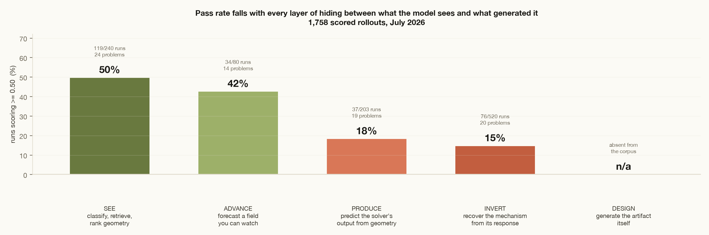
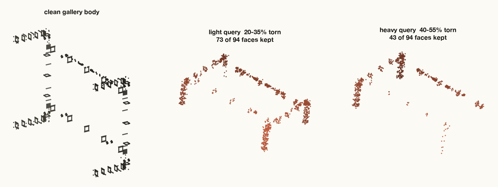
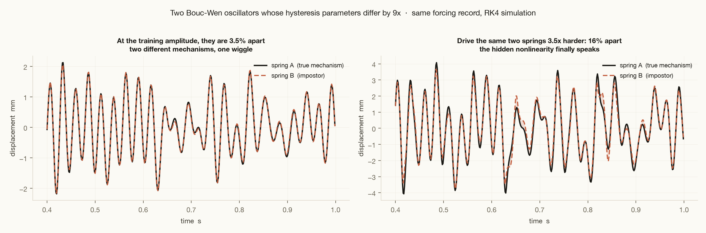

Field notes · Physics for frontier models
1976
A frontier model meets a fifty-year-old spring.
I build CAD and simulation environments that frontier models train against, for Anthropic. The model passes 100% of its runs on my hardest geometry task, a B-rep retrieval problem where half the part has been torn away. Against a mass-spring model published in 1976, it fails 85% of the time.
That is not a cute anomaly. Across 1,758 scored rollouts I pulled from our training infrastructure, the pattern is a staircase, and the thing the staircase measures is precise: how much machinery is hidden between what the model sees and what generated it. Each rung down, one more layer of hiding. This post walks the ladder rung by rung, with the actual tasks, the actual reward code, and the actual physics, until we reach the spring at the bottom and the empty rung below it.

The answer is a property of what you can look at
Start at the top, where models are frighteningly good. The tasks on this rung hand the model geometry and ask a question whose answer is a function of that geometry: classify the surface type, rank the catalog, find the part. The hardest task I personally built lives here. Take a real CAD body from the Autodesk Fusion 360 Gallery, rotate it randomly in SO(3), rescale it, jitter every surface point, tear away up to 55% of its faces, shuffle what remains, and ask the model to find the original in a gallery of 180 bodies.
The model never sees a solid. It sees each face downsampled to a 5×5 grid of surface samples, stacked into a tensor, plus an adjacency graph saying which faces touch:
def corrupt(graph, *, seed, dropout_low, dropout_high): """Return an independently corrupted view of ``graph``. Applies, in order: a uniform random SO(3) rotation of surface points and normals, a global rescale in U(0.5, 2.0), masked Gaussian jitter of points and normals, connectivity-grown face dropout keeping the largest connected component, and a random face permutation with shuffled edges.""" # uv_grid: [F, 5, 5, 7] (xyz, unit normals, coverage mask) # edge_index: [2, E] (face adjacency)

This should be hard. It is not. Fable 5 passes 14 of 14 runs on this task, mean reward 0.95, and the whole rung sits at 50% with the failures concentrated in a few pathological ranking tasks. The reason is worth stating plainly, because it defines everything below: the answer here is a stable function of visible structure. Invariance to rotation, scale and occlusion is exactly the kind of regularity a large model extracts from data without ever needing to know what a face or a solid is.
So the corpus takes the first thing away. What if the answer is not a property of the shape, but a field that lives on it, produced by machinery the model can watch but not touch?
You can watch the mechanism run. Continue it.
The forecasting tasks give the model frames of a physical field, buoyancy and velocity in a convecting fluid, density and magnetic field in a turbulent plasma, and ask it to advance the state several steps in one shot. The mechanism is fully visible: every frame is the mechanism operating. The model just has to continue what it can already see.

Pass rate: 42%. The dominant failure is the one every pixel-loss model commits: blur. Averaging over plausible futures minimises mean squared error and produces a fluid that has stopped obeying physics, plumes smeared into gradients, sharp fronts gone. The graded numbers can still look respectable, which is why these tasks do not grade the field alone. They grade a derived invariant the physics must satisfy, one a blurry field gets wrong:
# F(y) = <v_y * buoyancy>_x -- the convective heat flux profile. # A nonlinear diagnostic of the *coupling* between fields: blurring # v_y and b separately destroys their correlation, so MSE-minimising # forecasts fail here even when per-pixel error looks fine. reward = min(gate(field_rel_l2), gate(heatflux_rel_err))
The min is not a detail; it is the house style of the entire corpus, and we will meet it again. But notice what still makes this rung passable at 42%: the model is shown the operator in action. Two context frames of a convection cell contain an enormous amount of what it needs. The next rung deletes those frames.
Now you never see the field. Produce what the solver would say.
Here the model receives only geometry, a jet-engine bracket as a point cloud or a voxel grid, and must output what a finite-element solver would compute on it: the von Mises stress field under load, the displacement field, the first vibration mode. It has training pairs, geometry in, field out, but it never observes the operator that connects them. The physics has moved behind a curtain.

Pass rate: 18%, less than half the rung above. And the failures now come in a second flavor beyond blur: degenerate specialisation. Predict the easy component of the answer perfectly, abandon the rest, collect partial credit. On one bracket task, mass is nearly a linear function of occupied volume, so a model can nail it from the voxel count alone while ignoring stress and frequency entirely, and an averaged reward would pay it for that.
This is why every task on this rung grades several metrics and takes the minimum, with each metric mapped through four measured anchors. This is the actual scoring function from my retrieval task's verifier, and it is the same shape everywhere in the corpus:
def _metric_reward(value, baseline, threshold, target, strong): if value <= baseline: return 0.0 if value < threshold: return 0.2 * _smoothstep((value - baseline) / (threshold - baseline)) if value < target: return 0.2 + 0.3 * _smoothstep((value - threshold) / (target - threshold)) if value < strong: return 0.5 + 0.5 * _smoothstep((value - target) / (strong - target)) return 1.0 # reward = the WORST metric, not the average. A model that solves # one third of the problem perfectly scores zero, not one third. reward = max(0.0, min(1.0, min(scores.values())))
The anchors are not aspirations, they are measurements: baseline is what an untrained network actually scores, target is where the trained reference solution actually lands. Here is that scoring function running live, with the real anchors shipped in my task. Try to find a setting where being excellent at two of three metrics pays.
So far the hidden thing has been an output: a field the model must reproduce. But the operator producing that field was at least fixed and universal, the same elasticity everywhere, the same heat equation. One rung further down, the hidden thing is the operator itself.
The spring
In 1967, Robert Bouc wrote down a differential equation for hysteresis, the property by which a material's restoring force depends not on where it is but on where it has been. In 1976, Yi-Kwei Wen extended it into the form every earthquake and vibration engineer now knows, and the Bouc–Wen oscillator became one of the standard benchmarks for nonlinear system identification. It is five lines of physics:
# m*y'' + c*y' + k*y + z = u(t) # z' = a*y' - bg*|y'|*|z|**(nu-1)*z - bd*y'*|z|**nu # # z is the hysteretic force: an unmeasurable internal state whose # value depends on the entire history of the motion. Identified # benchmark parameters: m=2, k=5e4, a=5e4, bg=800, bd=-1100, nu=1. def drv(y1, y2, z, uv): dz = a*y2 - bg*abs(y2)*abs(z)**(nu-1)*z - bd*y2*abs(z)**nu return y2, (uv - c*y2 - k*y1 - z)/m, dz
The tasks on this rung hand the model one recording, force in, displacement out, sampled at 750 Hz, and ask it to predict the displacement for a new force record. Nothing else. To do that you must recover the mechanism: not fit the wiggle, but figure out what kind of machine is wiggling. There are twenty variants in the corpus, contaminated sensors, closed-loop feedback, asymmetric stiffness, thermal drift, and across 520 rollouts the pass rate is 15%, the worst of any family. The single hardest variant, identification from outlier-contaminated data, has a mean reward of 0.04.
Why does this kill a model that shrugs off half-destroyed CAD bodies? Because the training record genuinely does not pin down the mechanism, and pattern-matching has nothing to grab. I can show you. I fit a second oscillator, an impostor whose hysteresis parameters differ from the true ones by a factor of nine, whose exponent is 1.5 instead of 1.0, a physically different machine, so that its response to the training force matches to within 3.5%:

Every fit that stops at "matches the training data" has a large family of impostors to choose from, and gradient descent will happily pick one. The graders on this rung are built to drive the system into the regime where impostors die: held-out records at higher amplitudes, different spectral content, reversed sweeps. That is not adversarial cruelty. It is the definition of having identified a system.
You can do the experiment yourself. Both springs below are simulated live in your browser, RK4 on the equations above. At drive level 1.0× they are the same spring for all you can tell. Turn it up.
This is what "the model must reason about mechanism" means, concretely. There is no invariance to learn, no smooth map from input to output. The information that separates the true spring from the impostor is not in the training data, it is in knowing which experiment would separate them, which is a physicist's move, not a pattern-matcher's. That is the skill these 520 rollouts are teaching, one failed attempt at a time, and the per-variant scores say the teaching is uneven: the model already passes half its runs on the thermal-drift variant, and almost none on the contaminated one.
The spring is not hard because it is complicated. It is hard because it keeps its mechanism where the data cannot see it.
The rung that is not there
Follow the ladder's logic one step further. Rung 3 hides the field, rung 4 hides the mechanism. Rung 5 hides the artifact itself: here is a load case, a material budget, a manufacturing process, produce the part. That is the job a mechanical engineer is actually paid for, and it is almost completely absent from the corpus. Not because we cannot grade it, but because we cannot afford to.
We have known how to solve the toy version without any learning at all since the nineties. I ran one while writing this: topology optimisation of a beam, nothing given but a load, a support, and permission to use half the material.

for it in range(90): U = solve(K(x), F) # one finite-element solve dc = -penal * x**(penal-1) * strain_energy(U) x = optimality_criteria(x, filter(dc), volfrac) # move material toward strain
Ninety solves for a two-dimensional, linear-elastic, single-load, compliance-only toy, each solve a few milliseconds. The real version, a 3D bracket, four load cases, a stress constraint, a modal floor, a machinability check, is thousands of solves at minutes each. Grading one design attempt costs more than training on ten thousand prediction tasks, so the prediction tasks are what exist. The one place a live solver does sit inside a task, a PCB layout problem with a thermal FEA in the container, is the exception that shows what the rung would feel like:

This is why I think the most important number in this field is not a benchmark score but solver latency. Every order of magnitude off the solve time, GPU-native FEM, reduced-order models, surrogates audited by the real solver, moves tasks from "we grade one checkpoint at the end" toward "the agent checks itself a thousand times before submitting," and moves the corpus from prediction toward design. The models are learning physics from rungs 1 through 4 precisely so that they can eventually be trusted as the fast solvers inside rung 5. The ladder eats itself, in the good way.
Failure modes are the curriculum
One honest caveat and two hard numbers, and then the point.
The caveat: pass rates measure the tasks as much as the model. Task authors set difficulty anchors by hand, and about a third of the variance in per-problem scores traces to which family the task belongs to rather than anything about physics. My own retrieval task is the cautionary example: I calibrated its targets against the frontier in May, and by July the model passes every run at a mean of 0.95. The anchors did not get easier. The model got better, which is the entire purpose, and it means the staircase you saw is a photograph of a moving object.

The two numbers: across all scored rollouts, the correlation between the turns an agent spends and the reward it earns is −0.08. Thrashing is not progress; whatever separates a 0 from a 1 on these tasks is decided early, in whether the model recognises which rung it is standing on. And 23% of runs never produce a score at all, which is a reminder that before any of this gets philosophical, it is infrastructure.
The point. Software taught models to code by giving them a compiler: a verifier that is instant, deterministic, and impossible to argue with. Engineering has something better, physics itself, but its verifiers are slow, so the first generation of physics training looks like this ladder: verify cheap things about expensive simulations. What the staircase shows is that the cheap-to-verify skills are nearly saturated and the expensive ones, mechanism, inversion, design, are where the frontier actually is. The model that closes the gap on rung 4 will not do it by fitting wiggles better. It will do it the way Wen did in 1976, by knowing what the inside of the machine must look like for the outside to behave the way it does.
Fifty years is a long time for a spring to stay undefeated. I do not think it gets another ten.